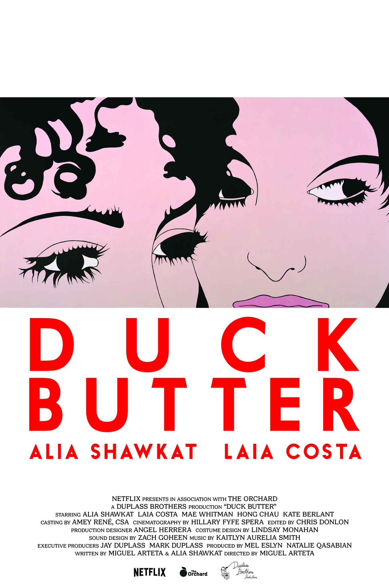

Duck Butter
-2000/10
Joelle says this is the worst movie she’s ever seen. Alia Shawkat and Miguel Arteta, what the fuck is wrong with you? This movie is terrible. No part of the movie is good. Who has a poop fetish? Alia or Miguel? I know it’s one of you. The sex scenes in this movie made no damn sense. Half assed scissoring fully clothed? Not even touching each other beyond the face while wearing clothes? Is this how people think women have sex? With their clothes on? Alia is at least bi, so what the fuck? I only got 20 minutes into the movie before I had to turn it off. Those 20 minutes felt like 8 hours. After the first scissoring scene gone wrong, there was a second sex scene where we didn’t even see anything. Joelle says it was definitely not hot and I agree. Disappointing at BEST. The movie only got $6877 in the box office and it deserved to make -$10,000. I should have been paid for watching it. Readers, all 2 of you, Venmo me.